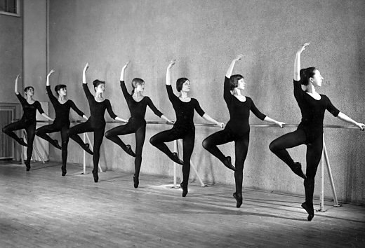
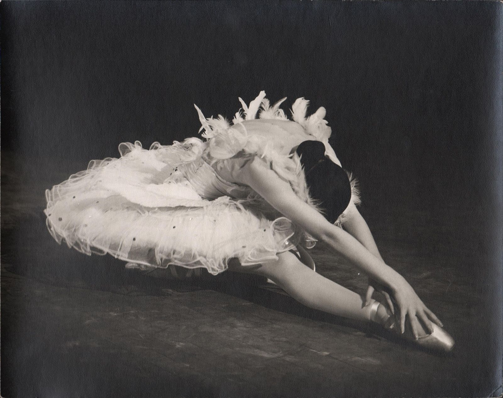

История классических танцев
Балет родился в Северной Италии в эпоху Возрождения. Итальянские князья любили пышные дворцовые празднества, в которых танец занимал важное место. Сельские пляски не подходили придворным дамам и кавалерам. Их одеяния, как и залы, где они танцевали, не допускали неорганизованного движения. Специальные учителя — танцмейстеры — старались навести порядок в придворных танцах. Они заранее репетировали с дворянами отдельные фигуры и движения танца и руководили группами танцующих. Постепенно танец становился все более театральным. Термин «балет» появился в конце XVI века (от итальянского balletto — танцевать). Но означал он тогда не спектакль, а лишь танцевальный эпизод, передающий определенное настроение. Такие «балеты» состояли обычно из мало связанных между собой «выходов» персонажей — чаще всего героев греческих мифов. После таких «выходов» начинался общий танец — «большой балет». Первым балетным спектаклем-представлением стал «Комедийный балет Королевы», поставленный в 1581 году во Франции итальянским балетмейстером Бальтазарини ди Бельджойозо. Именно во Франции происходило дальнейшее развитие балета.
В царствование Людовика XIV спектакли придворного балета достигли особого великолепия.
К середине XVIII века балет завоевывал большую популярность в Европе. Все аристократические дворы Европы стремились подражать роскоши французского королевского двора.Вскоре под влиянием моды женский балетный костюм стал значительно легче и свободнее, под ним угадывались линии тела. Танцовщицы отказались от обуви на каблуке, заменив ее на легкие бескаблучные туфельки. Менее громоздким стал и мужской костюм. Каждое новшество делало танцы осмысленнее, а танцевальную технику — выше. Постепенно балет отделился от оперы и превратился в самостоятельное искусство.
В конце XVIII века родилось новое направление в искусстве — романтизм, оказавший сильнейшее влияние на балет. Пытаясь сделать свой танец более воздушным, исполнительницы старались встать на кончики пальцев, что привело к изобретению пуант. Первой применившей танец на пуантах как выразительное средство была Мария Тальони. Именно она тогда ввела в балет пачку и пуанты.
В России первый балетный спектакль — «Балет об Орфее и Евридике» — поставлен 8 февраля 1673 года при дворе царя Алексея Михайловича в подмосковном селе Преображенское. Его подготовил иностранец Николай Лима (или Лим).
В 1738 году открылась первая в России балетная школа, и дети из дворцовой челяди стали первыми в России профессиональными танцовщиками.
В начале XIX века русское балетное искусство достигло творческой зрелости.
В середине XIX века в русскую литературу и искусство пришел реализм. Балетмейстеры лихорадочно, но безрезультатно пытались создать реалистические спектакли. Начался кризис балетного искусства.
Новый этап в истории русского балета начался, когда великий русский композитор П. Чайковский впервые сочинил музыку для балета. Это было «Лебединое озеро». До этого к балетной музыке серьезно не относились. Она считалась низшим видом музыкального творчества, всего лишь аккомпанементом к танцам. Благодаря Чайковскому балетная музыка стала серьезным искусством наряду с оперной и симфонической музыкой.
В 1908 году начались ежегодные выступления артистов русского балета в Париже, организованные театральным деятелем С. П. Дягилевым. Среди них наиболее выдающейся танцовщицей была несравненная Анна Павлова. «Умирающий лебедь», созданный великой балериной Павловой, — поэтический символ русского балета начала XX века.
После Октябрьской революции 1917 года многие деятели балетного театра покинули Россию, но, несмотря на это, школа русского балета уцелела.В конце 1950-х годов наступил перелом. Хореографы и танцовщики нового поколения возродили забытые жанры — одноактный балет, балетную симфонию, хореографическую миниатюру. А с 1970-х годов возникают самостоятельные балетные труппы, независимые от оперно-балетных театров.
Обучение классическому танцу
Часто даже опытные танцоры различных направлений танцев продолжают заниматься классикой, ведь ее основы универсальны. На занятиях классического танца обучают основным позициям рук и ног, правильной постановке корпуса, знакомят с профессиональной терминологией и историей развития балета, воспитывают музыкальность, развивают устойчивость и координацию, а также готовят небольшие классические постановки в виде этюдов, адажио или различных вариаций. Все движения в классическом танце основываются на выворотности — одном из важнейших качеств в классике, которое просто необходимо для любого сценического танца. Выворотность и развитие шага необходимы независимо от высоты, на которую поднимается нога, выворотность словно держит ногу, ведет ее к нужному положению, способствуя чистоте пластичных движений и сглаживая углы, образуемые пятками при подъеме ног. Недостаточно гибкое колено, щиколотка и подъем сковывают свободные движения ног, делая их стесненными и маловыразительными. Основываясь на выворотности, в классическом танце существует пять позиций ног. Причем во всех этих позициях выворачиваются не только ступни, а ноги полностью, начиная с бедренного сустава. Регулярные продолжительные тренировки гибкости и выносливости позволяют принимать необходимые положения без особых усилий.
Начиная заниматься, нужно помнить о стойке, ведь ничего не получится, если не вытянуть корпус вертикально, не допуская согнутого или выгнутого позвоночника, и не распределить вес между ногами. Для выработки правильной осанки необходимо много терпения и времени. О своей осанке нельзя забывать никогда — ни во время занятий классикой, ни при самостоятельных тренировках, ни в любой другой день. Классический танец, как и многие другие — это не только набор движений, его нужно оживить, вложить в него эмоции и чувства. И как только в танце раскрываются сильные чувства, впечатление от него в значительной степени меняется, он завораживает своей пластической выразительностью, оставляя полное эстетическое наслаждение.
В XVII веке (1701 г.) француз Рауль Фейе создал систему записи элементов классического танца. Эти термины признаны специалистами в области мировой хореографии и в настоящее время. Знание специальных терминов ускоряет процесс обучения. Это международный язык танца, возможность общения с хореографами, понимание специальной литературы, возможность кратко произвести запись учебных комбинаций, урока, этюдов, вольных упражнений, композиций.
Хореографическая терминология — система специальных наименований, предназначенных для обозначения упражнений или понятий, которые кратко объяснить или описать сложно.Экзерсис у опоры или на середине - это комплекс тренировочных упражнений в балете, способствующих развитию мышц, связок, воспитанию координации движений у танцовщика. Экзерсис выполняются у «станка» (прикрепленной кронштейнами к стене) и на середине учебного зала ежедневно Экзерсис состоят из одних и тех же элементов.